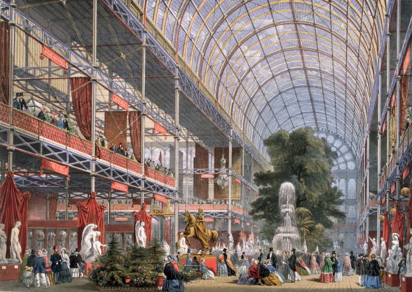
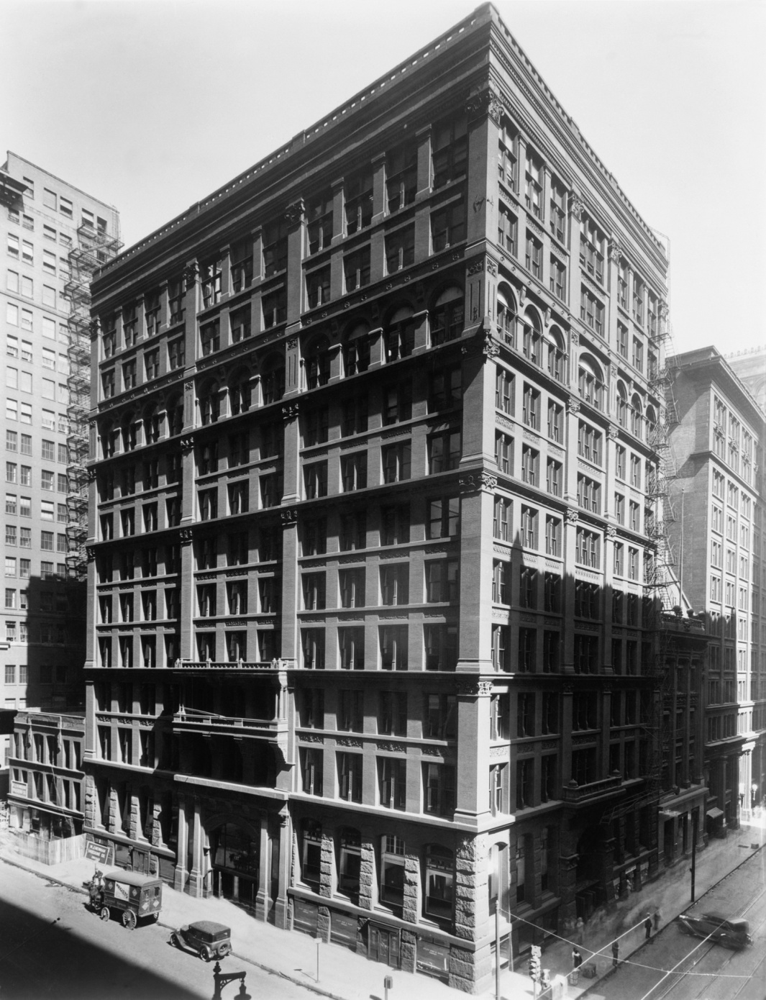
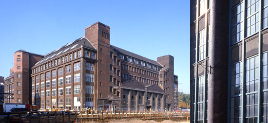
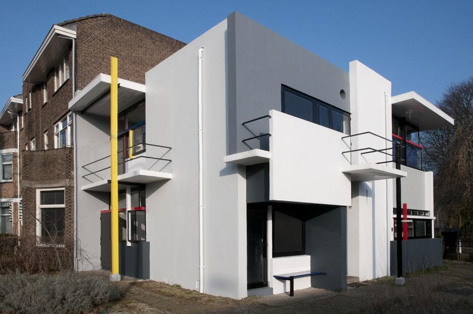
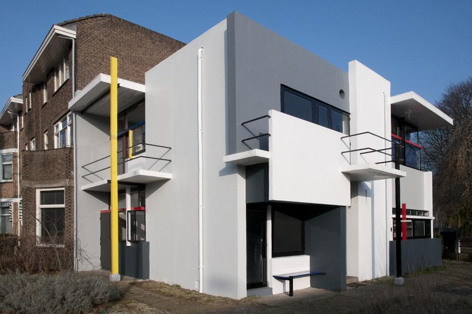
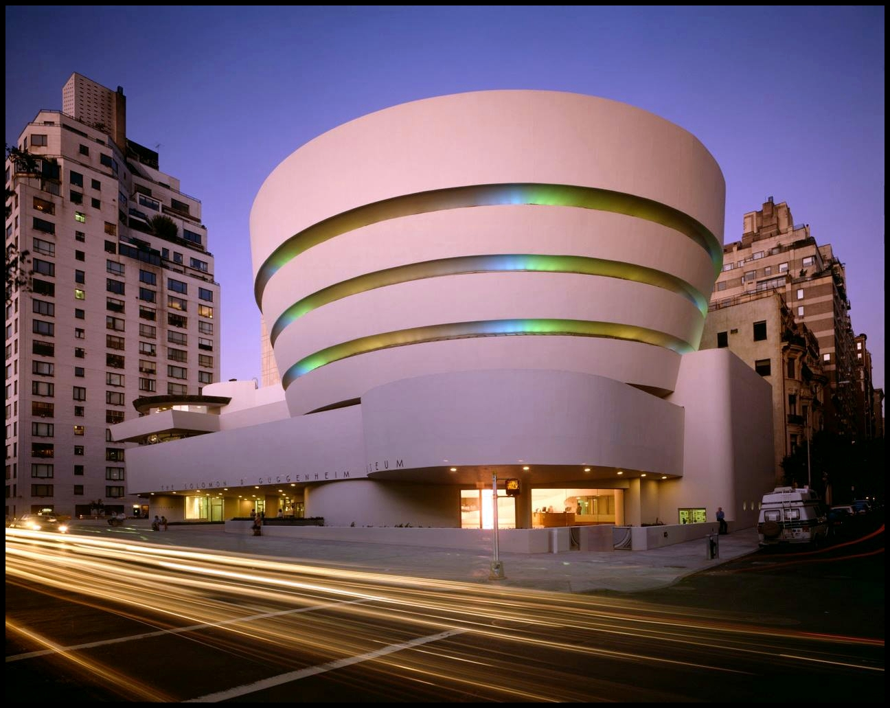
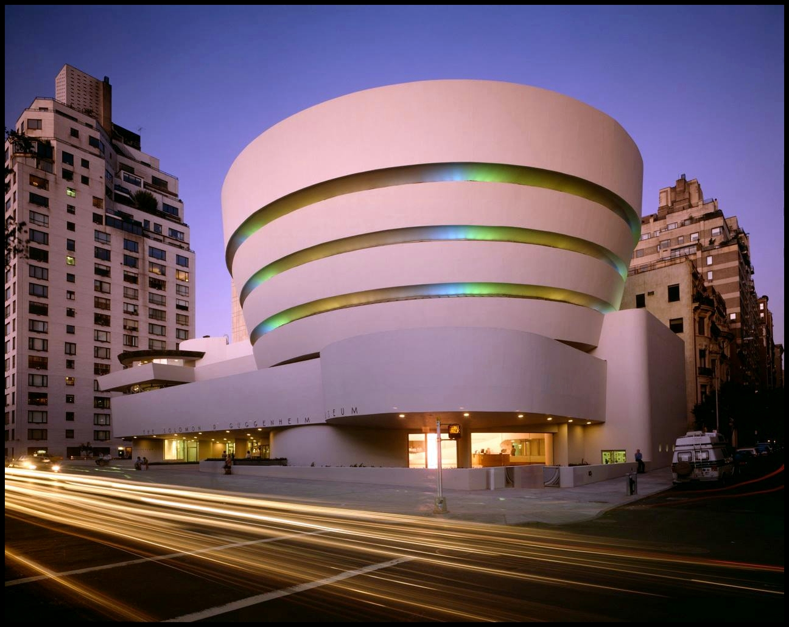
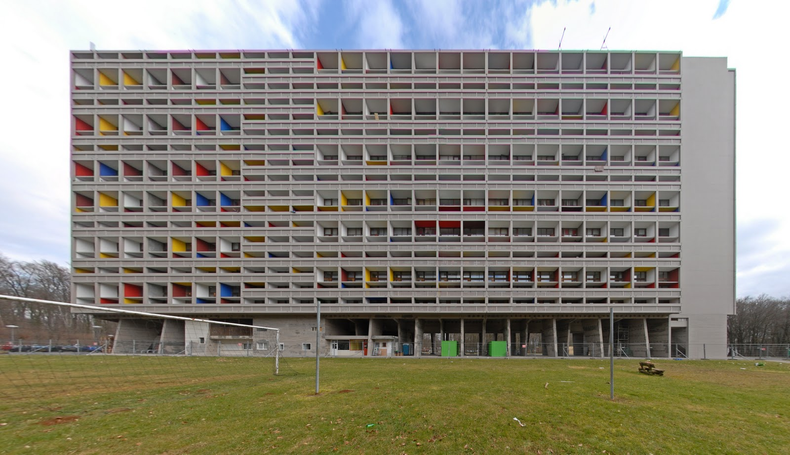
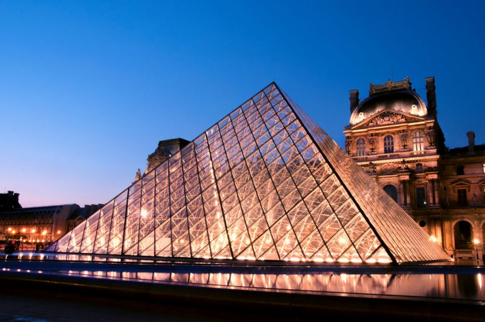

Secolul XX
Arhitectură
La începutul secolului, arhitecții au lăsat de-o parte stilurile tradiționale și s-au stăduit să dea naștere unor tipuri de construcții practice și potrivite exigențelor societății moderne. După anii '60 acest "stil internațional" a lăsat loc “postmodernismului” sprinten și diversificat.
În secolul al XIX-lea în urma revoluției industriale și a dezvoltării orașelor arhitecții au trebuit să înfrunte noi provocări. În mai multe privințe ei au obținut rezultate –în planurile bine gândite au luat în seamă noile funcții ale clădirilor. Totuși planul de bază și infățișarea clădirilor au rămas "clasice". Arhitecții foloseau în continuare bogăția de - forme ale stilurilor clasic, gotic și alte stiluri tradiționale - chiar și in cazul construcțiilor moderne cum ar fi fabricile sau gările.
Noi forme la orizont
Revoluționarii arhitecturii atacau în primul rând acest tip de "istoricism". Li se păreau mai promițătoare formarea construcțiilor simple, practice, cu ajutorul tehnologiei noi, dezvoltate. Palatul de Cristal din Hyde Park  din Londra arăta deja această cale în 1851. Această imensă clădire construită pentru expoziția modială nu este altceva decât o uriașă seră - un fel de schelet metalic completat cu lame de sticlă. Construcția era funcțională (corespundea sarcinii) - relativ ieftină și ușor de construit - dând un exemplu de stil flexibil de construcție, care poate fi folosit pentru cele mai diverse scopuri sau locuri de desfășurare. Acest tip de constructie functionază fără multe ornamente de explu: construcțiile industriale au cucerit puțin spatiu în secolul al XIX-lea, deși construcția metalică a turnului Eiffel (1889) s-a inălțat deasupra Parisului ca un exemplu spectaculos al știintei inginerești puritane. Între timp a luat naștere tehnologia Bessemer de fabricare a oțelului și ca urmare a apărut betonul armat (în acest caz betonul este întărit de scheletele interioare din oțel). S-a descoperit și vata de sticla. Aceste materiale au făcut posibila apariția unui nou stil de construcții, zgârie norii.
Zgârie nori
Primii zgârie nori au fost construiți în Chicago, unde în urma distrugerilor dezastruoase provocate de incendiul din 1871 a fost necesară construirea urgentă de noi clădiri. Cu câțiva ani mai târziu inventarea așcensorului electric a făcut posibilă construirea caselor cu mai multe nivele.
Home Isurance Building

(1883-1885) al lui William le Baron Jenney este considerat primul zgârie nori. Acesta a fost urmat de multe alte clădiri. În următorii 20 de ani în Chicago s-a dezvoltat o adevărată școală de arhitecti radicali, dintre care cel mai talentat a fost Louis Sullivan (1856-1924) ale cărui clădiri
Carson, Pirie și Magazinul Scott
 au devenit prototipul multor zgârie nori americani.
au devenit prototipul multor zgârie nori americani.
Design și fantezie
Deși Sullivan a fost pionierul funcționalismului liniilor precise, care mai târziu a devenit predominant În arhitectura modernă, în decorarea construcțiilor sale folosea adesea elementele stilului contemporan Art Nouveau. Acest stil decorativ complicat folosea plante și alte forme organice, cat și linii vălurite împrăștiate: stilul fastuos și puțin decadent a fost adus în arhitectură de către belgianul Victor Horta (1861-1941) și francezul Hector Guimard (1867-1942). Fierul forjat se potrivea perfect liniilor curbate ale acestui stil -cele mai concludente exemple nu sunt clădiri, ci intrările metroului parizian proiectat de Guimard.
Alți doi arhitecti talentati au dezvoltat un stil înrudit cu stilul Art Noveau. Scoțianul Charles Rennie Mackintosh a folosit atât în cazul
școlii de Artă din Glasgow
 cât și al altor clădiri forme lungite și netede -combinând cu succes aspirațiile modernismului cu elementele stilului Art Noveau. Spaniolul Antoni Gaudi (1852 - 1926) a construit în Barcelona mai multe clădiri (de exemplu
biserica Sagrada Familia
cât și al altor clădiri forme lungite și netede -combinând cu succes aspirațiile modernismului cu elementele stilului Art Noveau. Spaniolul Antoni Gaudi (1852 - 1926) a construit în Barcelona mai multe clădiri (de exemplu
biserica Sagrada Familia
 și
Casa Mila
și
Casa Mila
 ) cu o fantezie care uimește și astăzi.
) cu o fantezie care uimește și astăzi.
Simplu si funcțional
Aceste tipuri de clădiri nu satifăceau însă necesitățile societății secolului XX. În acestă epocă era nevoie de clădiri industriale, birouri, magazine și locuințe construite din prefabricate ieftine și standardizate. Pionierii acestui tip de funcționalism au fost Peter Behrens care a costruit
Fabrica de Motoare AEG

din Berlin (1908-1909), austriacul Otto Wagner, și urmașii lui talentați.
Casa de Economii
 din Viena construită de Wagner este un exemplu clasic de construcție modernă din oțel și sticlă. Arhitectul și teoreticianul modernismului radical, vienezul Adolf Loos susținea că "ornamentele sunt o crimă" -el a exprimat cel mai bine acea consecvență care în jurul anilor 1920 a devenit în Europa de Vest idea principală a "mișcării moderne". Printre pionierii acestui stil s-a numărat grupul olandez De Stijl, format în 1917. Majoritatea clădirilor lor aveau forme pătrate, cu suprafețe netede, vopsite in alb sau alte culori de bază. Printre altele, un exemplu elocvent este
Casa Schroder

a lui Gerri Thomas Rietveld (1924).
din Viena construită de Wagner este un exemplu clasic de construcție modernă din oțel și sticlă. Arhitectul și teoreticianul modernismului radical, vienezul Adolf Loos susținea că "ornamentele sunt o crimă" -el a exprimat cel mai bine acea consecvență care în jurul anilor 1920 a devenit în Europa de Vest idea principală a "mișcării moderne". Printre pionierii acestui stil s-a numărat grupul olandez De Stijl, format în 1917. Majoritatea clădirilor lor aveau forme pătrate, cu suprafețe netede, vopsite in alb sau alte culori de bază. Printre altele, un exemplu elocvent este
Casa Schroder

a lui Gerri Thomas Rietveld (1924).
Înăltarea clădirilor
La concluzii asemănătoare a ajuns un arhitect elvețian și mai renumit, Charles Edouard ]eanneret, mai cunoscut sub numele de Le Corbusier (1887-1966). El a exprimat cel mai clar ace a convingere a mișcării modeme prin care construcțiile trebuiau ferite de omamente și alte elemente traditionale și trebuie reduse până la cele mai simple forme geometrice. În anii '20 Le Corbusier a proiectat mai multe clădiri particulare de renume, ca de exemplu
Villa Savoie
 din orașuI francez Poissy (1927-1931), ridicată pe colane în așa feI încât toată suprafața interioară să rămână utilizabilă. În anii '30 din cauza răririi comenzilor particulare, Le Corbusier a început proiectarea orașelor: soIuția Iui la reducerea spațiului urban și creșterea populației a fost înmulțirea nivelelor caselor ("highrise"). părerea Iui a fost că populația trebuie cazată în clădiri cu mai multe nivele și nu în case individuale, astfeI putându-se stopa extinderea exagerată a orașelor. Ideile Iui au avut mai târziu un impact putenic asupra colegilor săi.
din orașuI francez Poissy (1927-1931), ridicată pe colane în așa feI încât toată suprafața interioară să rămână utilizabilă. În anii '30 din cauza răririi comenzilor particulare, Le Corbusier a început proiectarea orașelor: soIuția Iui la reducerea spațiului urban și creșterea populației a fost înmulțirea nivelelor caselor ("highrise"). părerea Iui a fost că populația trebuie cazată în clădiri cu mai multe nivele și nu în case individuale, astfeI putându-se stopa extinderea exagerată a orașelor. Ideile Iui au avut mai târziu un impact putenic asupra colegilor săi.
Inginerii comunității
In concepția Iui Le Corbusier arhitectura urma să devină puterea principală a unei comunități democratice, mai "aerisită" decât în trecut. Idei similare despre "construcții comunitare" au primit și la Bauhas, școala înființată de Walter Gropius (1883-1969) în Weimar, Germania. ObiectivuI școlii a fost alierea artei și designului cu producția mecanică de masă, și a angajat artiști contemporani și arhitecți moderniști ca de exemplu Mies van der Rohe (1886-1969). Gropius insuși a proiectat clădirea noua a Bauhaus-ului după ce școala s-a mutat in 1925 la Dessau. După venirea la putere a naziștilor în 1933, școala s-a închis, muți dintre membrii acesteia emigrand în Statele Unite. Între timp fostul ucenic al lui Louis Sullivan, stra1ucitul Frank Lloyd Wright (1867-1959) devine personalitatea dominantă a arhitecturii americane pentru multe decenii. Cu toate că aprecia unele vederi ale modernismului, Wright ironiza idea "cutiilor pe picioroange": flerul lui genial pentru soluții originale și efecte dramatice îl deosebeau de toți ceilalți. Dintre construcțiile lui cele mai originale amintim așa numitele "case de preerie" în care a eliminat compartimentarea cu pereti (el a susținut că este inventatorul interioarelor cu plan deschis (monocamera)), eliminând granița dintre spațiul de locuit și peisaj. Este renumită
Casa-cascadă (1936)
 care pare ridicată din piatră in pădurea din Pennsylvania. Wright a fost activ pană la sfârșit și a creat clădiri originale, ca de exemplu
Muzeul Guggenheim din New York (1956-1959)

. În 1932 mișcarea modernă devenise deja larg cunoscută, stilul său original fiind numit "stil internațional". Cu toate acestea, arhitecții moderniști erau acceptați cu greu, În anii '30 situația lor fiind agravată și de respingerea atât de către naziști, cât și de către sovietici a modernismului În toate domeniile artei. În alte zone ale lumii recesiunea economică a redus mult volumul construcțiilor.
care pare ridicată din piatră in pădurea din Pennsylvania. Wright a fost activ pană la sfârșit și a creat clădiri originale, ca de exemplu
Muzeul Guggenheim din New York (1956-1959)

. În 1932 mișcarea modernă devenise deja larg cunoscută, stilul său original fiind numit "stil internațional". Cu toate acestea, arhitecții moderniști erau acceptați cu greu, În anii '30 situația lor fiind agravată și de respingerea atât de către naziști, cât și de către sovietici a modernismului În toate domeniile artei. În alte zone ale lumii recesiunea economică a redus mult volumul construcțiilor.
După al doilea război mondial dominația stilului internațional a devenit de necontestat. Arhitecții ca Le Corbusier s-au adaptat spiritului epocii, iar volumul mare de construcții realizate au oferit un vast teritoriu de afirmare a rigurozității, a spiritului de economie și de folosire a elementelor prefabricate. În 1946 Le Corbusier a proiectat celebrul
Unite d'Habitation

, un bloc uriaș de locuinte pe piloni, cu 337 de etaje, din care cele intermediare aveau spatii comerciale, iar la mansarda creșe, gradinițe, săli de sport, săli de spectacol în aer liber. Acest complex de locuințe a avut un mare rol în lansarea ideii, că multe probleme sociale și economice pot fi rezolvate prin realizarea de construcții înalte. În același timp, în Statele Unite, Mies van der Rohe a construit ansambluri de birouri aparent extrem de simple care au început să fie imitate in toată lumea. Cel mai cunoscut dintre ele a fost
clădirea Seagram din New York (1958)
 proiectată impreună cu Philip Johnson. Construcția cu un excelent raport metal-sticlă, a fost amplasată pe zona din spate a unei mici piețe, fără a o ocupa în întregime. Cu fatadele planate cu bronz și marmură, cu pereții din sticlă fumurie, a influențat mult timp mod a vremii.
Deziluzie Tehnologia arhitecturii a evoluat cu pași mari. Acest lucru este cel mai bine ilustrat de cupola geodetică, o structura de metal și plăci de plexiglas (la acestea cupola este transparent și este formată din plăci de plexi susținute de cabluri precum și de alte minuni care pot fi văzute la pavilioanele expoziționale. Spre sfârșitul anilor '60 sondajele au arătat însă că oamenii sunt deziluzfonați de stilul internațional. Oamenii considerau clădirile plicticoase, monotone și reci. Construcțiile masive de blocuri uriașe erau considerate factori favorizanți ai destramării comunităților și ai izolării indivizilor, iar proliferarea ansamblurior de birouri puneau în pericol trecutul istorical orașelor. Chiar și un oraș nou ca marea capitală braziliană, Brasilia, a arătat că arhitecții nu simt relația cu oamenii, nu cunosc necesitățile și dorințele lor reale.
proiectată impreună cu Philip Johnson. Construcția cu un excelent raport metal-sticlă, a fost amplasată pe zona din spate a unei mici piețe, fără a o ocupa în întregime. Cu fatadele planate cu bronz și marmură, cu pereții din sticlă fumurie, a influențat mult timp mod a vremii.
Deziluzie Tehnologia arhitecturii a evoluat cu pași mari. Acest lucru este cel mai bine ilustrat de cupola geodetică, o structura de metal și plăci de plexiglas (la acestea cupola este transparent și este formată din plăci de plexi susținute de cabluri precum și de alte minuni care pot fi văzute la pavilioanele expoziționale. Spre sfârșitul anilor '60 sondajele au arătat însă că oamenii sunt deziluzfonați de stilul internațional. Oamenii considerau clădirile plicticoase, monotone și reci. Construcțiile masive de blocuri uriașe erau considerate factori favorizanți ai destramării comunităților și ai izolării indivizilor, iar proliferarea ansamblurior de birouri puneau în pericol trecutul istorical orașelor. Chiar și un oraș nou ca marea capitală braziliană, Brasilia, a arătat că arhitecții nu simt relația cu oamenii, nu cunosc necesitățile și dorințele lor reale.
Noi direcții
Evoluția arhitecturii a fost. Anunțată la sfârșitul anilor '50 de construcții curajoase, sculpurale, de exemplu
capela de la Ronchamp (1955)
 , realizată de Le Corbusier și
clădirea Operei din Sydney
, realizată de Le Corbusier și
clădirea Operei din Sydney
 realizată de arhitectul danez Jorn Utzon. Totuși nici un alt curent unitar nu a reușit să ia locul stilului internațional, așa că stilul de după 1970 este numit în arhitectură postmodern. Arhitectura postmodernă a devenit mai sensibilă față de nevoia de un mediu uman mai prietenos, intim și ușor accesibil. Mulți arhitecți au respins definitiv modernismul și s-au reintors la clasicism. Alții folosesc elemente ale clasicismului sau ale altor stiluri tradiționale la realizarea proiectelor; acest lucru este foarte apreciat la realizarea centrelor comerciale și a altor construcții multifuncționale. Rar, se imbină armonios distracția cu noile cuceriri ale tehnicii, ca de exemplu în cazul Centrului Pompidou din Paris, proiectat de Piano și Rogers.
realizată de arhitectul danez Jorn Utzon. Totuși nici un alt curent unitar nu a reușit să ia locul stilului internațional, așa că stilul de după 1970 este numit în arhitectură postmodern. Arhitectura postmodernă a devenit mai sensibilă față de nevoia de un mediu uman mai prietenos, intim și ușor accesibil. Mulți arhitecți au respins definitiv modernismul și s-au reintors la clasicism. Alții folosesc elemente ale clasicismului sau ale altor stiluri tradiționale la realizarea proiectelor; acest lucru este foarte apreciat la realizarea centrelor comerciale și a altor construcții multifuncționale. Rar, se imbină armonios distracția cu noile cuceriri ale tehnicii, ca de exemplu în cazul Centrului Pompidou din Paris, proiectat de Piano și Rogers.
Arhitectura nostalgică
Nici acest stil nu este pe placul tuturor. În Marea Britanie prințul Charles care s-a ocupat activ de problema moștenirii arhitecturale, chemă în cartea sa la reintoarcerea la valorile tradiționale. Din multe puncte de vedere acest lucru nu este fără folos, totuși a provocat un "recul nostalgic" în dezvoltarea arhitecturii. În contrast cu acestea, guvernul francez a spijinit ideile noi. Piramida de sticlă (1989)  a arhitectului chinezo-american I.M.Pei amplasată în curtea interioară istorică a palatului Louvre, a fost un adevărată pentru public. În timp ce se inmulțesc stilurile, arhitectura secolului XX dă naștere la controverse și dezbateri aprinse.